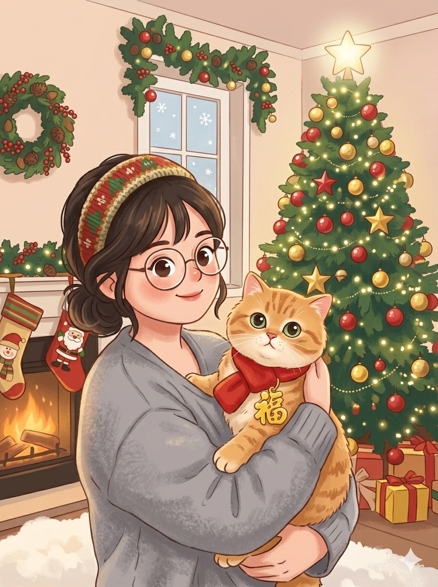

My Story

Lisa Li
Hello! I'm Lisa, a digital and traditional artist with a passion for bringing whimsical characters and heartfelt stories to life. My journey in art has always been about finding that sweet spot between classical aesthetics and the vibrant, playful energy of modern digital media.
Most of my days are spent in my studio, often accompanied by my feline muse, exploring new ways to blend rich textures with soft light to create a sense of curiosity and joy in every piece I create.

Muse & Medium
The "Muse" represents the raw, ethereal inspiration that sparks every creation, while the "Medium" is the physical or digital vessel through which that vision comes to life. Whether it is the texture of oil on canvas or the precision of digital pixels, our mission remains the same: to evoke emotion through visual storytelling.